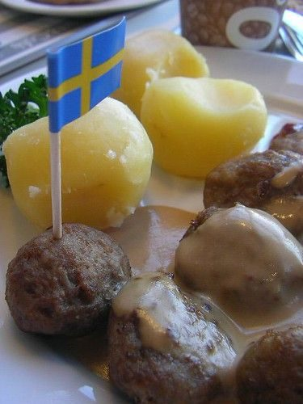

Swedish Meatballs
Poppa kept 2 versions of this dish.
Follow any recipe, mix and match, or use for inspiration for your own version. That's how Poppa did it.
Swedish Meatballs

Photo: Håkan Dahlström (CC BY 2.0)
Swedish-style meatballs of hamburger and ground pork seasoned with nutmeg, browned in butter and simmered in a consomme gravy finished with sour cream.
Directions
- Blend meats, crumbs and milk. Saute onions in butter and add to meats with egg and seasonings. Mix well to get everything blended. Roll into balls. Brown in butter. Remove as they are cooked. To pan juices add flour and consomme, add lemon juice. Return balls to gravy and simmer 1 hour. Remove meat balls. Add sour cream to gravy and heat. Pour over meatballs.
- ?? ?? Depends on how many you want to make. May need to add more crumbs etc. depending on amount you make.
- Blend the meats (hamburger and ground pork), breadcrumbs, and milk.
- Saute the minced onion in butter, then add to the meats along with the egg and seasonings (nutmeg, black pepper, and salt).
- Mix well to get everything blended; roll into balls.
- Brown the meatballs in butter; remove as they are cooked.
- To the pan juices, add the flour and consomme, then add a drop of lemon juice.
- Return the balls to the gravy and simmer 1 hour.
- Remove the meatballs. Add the sour cream to the gravy and heat. Pour over the meatballs.
- Note: The amount of meat depends on how many you want to make; you may need to add more crumbs, etc., depending on the amount you make.
Goes well with
Swedish Meat Balls

Photo: jetalone (CC BY 2.0)
Swedish-style meatballs of hamburger and ground pork seasoned with nutmeg, browned in butter and simmered in a consomme gravy finished with sour cream and a touch of lemon.
Directions
- Blend meats, crumbs and milk. Saute onion in butter and add to meat with eggs and seasoning. Mix with hands to get even texture, roll into small balls. Brown in butter. Remove. To pan juices add, flour and consomme to make gravy . Return meatballs to gravy and simmer over very low heat. Stir until hot, check seasoning and add lemon juice. Return meatballs to gravy and simmer over very low heat for 1 hour. Remove meatballs to serving platter. Stir sour cream into gravy and heat. Pour over meat balls.
- Blend the meats (hamburger and ground pork), breadcrumbs, and milk.
- Saute the minced onion in butter, then add to the meat along with the egg and seasonings (nutmeg, pepper, and salt).
- Mix with your hands to get an even texture; roll into small balls.
- Brown the meatballs in butter; remove.
- To the pan juices, add the flour and consomme to make a gravy.
- Return the meatballs to the gravy and simmer over very low heat, stirring until hot; check the seasoning and add a drop of lemon juice. Continue to simmer over very low heat for 1 hour.
- Remove the meatballs to a serving platter. Stir the sour cream into the gravy and heat. Pour over the meatballs.
Goes well with
https://baron-3dl.github.io/normans-kitchen/recipe/swedish-meatballs.html